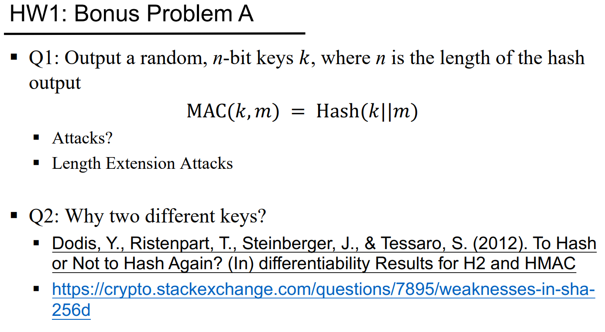

题目
作业的内容是网络安全与检测技术 作业 1，其中第八题的内容是：
我的答案
1.(1)Mi=Dk(Ci⊕Ci−1)⊕Ci-1
(2)在AES-CBS-STAR模式中，每个密文分组Ci依赖于前一个密文分组Ci−1，即加密过程是串行的，无法进行并行化。
解密过程中Mi的计算也依赖于前一个密文分组Ci−1，因此，解密过程也是串行的。
所以AES-CBS-STAR模式既不能并行加密，也不能并行解密。
(3)由于C0=IV0是已知的，对手能够根据选择的明文和已知的IV，推测出初始密文分组C1或其他分组。然后攻击者可以分析密文序列中的变化趋势，利用IV的已知值推断出明文。
2.(1)在ECB模式中，每个分组的加密是独立的，只会影响第8个明文分组的第17比特。
(2)CTR模式的密文模块之间是独立的，因此一个密文模块的污染只会影响相应的明文模块。第2和第3个明文分组都将被污染。
(3)OFB模式中,密文生成是通过明文与一个伪随机序列进行异或来完成的,密文模块之间是独立的，只会影响第7个明文分组。
(4)CBC模式中，每个明文分组与前一个密文分组进行异或操作,会影响当前分组的解密结果和下一个分组的解密结果。会影响第9个明文分组的第16和第17比特，以及第10个明文分组的第16和第17比特。
(5)CFB模式中，密文是通过明文与来自加密器输出的前几个比特进行异或来生成的。会影响第12个明文分组的第3到第6比特，以及以后所有明文分组的所有比特。
3.这种方法与RSA不等价在RSA中，e（相当于这里的E）的选择是有一定条件的，通常要求e与(P-1)(Q-1)互质，这样才能保证解密的唯一性和正确性。而这里不满足RSA中的选择条件，解密指数D未必存在，或者可能存在多个解，无法保证解密过程的正确性。所以该方法不是RSA算法。
4.假设我们希望找到一对新的分组C1和C2，使得：
RSAH(C1,C2)=RSAH(B1,B2)即
RSA(E(C1)⊕C2)=RSA(E(B1)⊕B2)
由于RSA是一个可逆操作，给定密文，我们可以通过逆向操作（即RSA解密）得到对应的明文。因此，如果我们有密文E(B1)⊕B2，我们可以通过适当选择C1和C2来调整这个结果，使其匹配。
我们可以选择：
C2=B2⊕(E(C1)⊕E(B1))这样，RSA(C1,C2)就会与RSA(B1,B2)相同。因此，该Hash函数是不安全的，它不满足抗弱碰撞性。
5.攻击者可以利用逐字节比较的特性，通过逐字节猜测sig_bytes的正确值。在每次对比时，比较操作会在不匹配的字节处提前结束。可以通过监控每次比较的时间差来判断哪些字节匹配。通常，匹配的字节会导致较长的比较时间（因为继续进行字节比较），而不匹配的字节会导致较短的比较时间。利用这个反馈信息，攻击者就可以逐步恢复正确的签名。
我们可以使用常数时间比较：
importhmac
defverify(key,msg,sig_bytes):
returnhmac.compare_digest(HMAC(key,msg),sig_bytes)
6.(1)Bob能解密密文c并获得明文m的条件是密文c中包含了可以通过对称加密解密或通过私钥解签名获得的明文。
(a)这种方式使用了哈希函数对密文Enc(K,m)进行哈希计算。哈希函数是单向的，Bob无法获得明文m，
(b)中，c1是通过对称加密得到的密文，Bob使用对称密钥K可以解密c1得到m。c2只是Enc(K,m)的哈希，Bob不需要它来获取明文m。(c)中c1是加密后的密文，Bob可以使用K解密得到m，c2是对m的MAC（消息认证码），它主要用于验证消息的完整性。
(d)中c1是加密的密文，Bob可以解密它得到m。c2是对加密后密文的MAC，用于完整性验证。
(e)这里，c是Alice使用私钥SKA对加密消息Enc(K,m)的签名。Bob可以使用Alice的公钥PKA来验证签名，然后Bob可以根据对称密钥K解密Enc(K,m)。
(f)中c1是加密后的明文m，Bob使用K解密得到m。c2是对明文m的签名（加密过），Bob可以解密c2并验证签名，但这不会影响c1中的解密过程。
Bob能解密c获得明文m的方式是(b)、(c)、(d)、(e)、(f)。
(2) (a)是通过哈希函数对密文进行处理，而哈希函数本身是单向的，不涉及加密，所以不能提供机密性保护。
(b)是对称加密的密文，提供了机密性保护，可以提供机密性保护。
(c)是对称加密的密文，可以提供机密性保护。
(d)是对称加密的密文，可以提供机密性保护。
(e)是加密的密文，提供了机密性保护，可以提供机密性保护。
(f)是对称加密的密文，可以提供机密性保护。
可以提供机密性保护的方式是(b)、(c)、(d)、(e)、(f)。
(3) (a)只能提供单向验证，但不能验证消息是否在传输中被篡改，不能提供完整性保护。
(b)中c2是Enc(K,m)的哈希值，可以用于验证密文是否被篡改，因此可以提供完整性保护。
(c)中c2是对消息m的MAC，可以验证消息的完整性，因此可以提供完整性保护。
(d)中c2是对密文Enc(K,m)的MAC，可以验证密文是否被篡改，因此可以提供完整性保护。
(e)Sign(SKA,Enc(K,m))是对密文的签名，可以验证密文是否被篡改，因此可以提供完整性保护。
(f)中c2是对明文m的签名的加密，可以用于验证消息的完整性，因此可以提供完整性保护。
可以提供完整性保护的方式是(b)、(c)、(d)、(e)、(f)。
(4)选择方式(c)：c=c1,c2:c1=Enc(K,m),c2=MAC(K,m)，它同时提供了机密性和完整性保护。为了防止重放攻击，我们可以在消息中添加时间戳或唯一的随机数nonce。
7.(1)一种可能的攻击角度是伪造人脸图像进行攻击，即通过技术手段制造或操控一个与目标人物极为相似的面部图像或视频，从而欺骗门禁系统，绕过人脸识别机制进入系统。具体攻击方法可能包括以下几种：
照片攻击：使用目标用户的照片，将其展示给门禁系统的摄像头来欺骗系统。
视频攻击：通过录制目标用户的正常活动（例如走路、说话等），再通过播放视频来进行攻击，模拟目标的面部动态。
3D模型攻击：通过3D打印技术制造出目标人物的面部模型，并将其放置在摄像头前，试图欺骗识别系统。
深度学习攻击：利用深度学习技术生成目标人物的虚假面部图像或视频，进行欺骗。
威胁模型：
资产：门禁后的区域安全、生物识别数据、门禁系统完整性。
对手：外部无通行权限的攻击者，获取门禁后的被保护的东西
漏洞：识别技术不精确、缺乏活体检测、数据传输不加密。
威胁：伪造身份、深度伪造、数据截获。
风险：高价值区域和用户数据泄露，漏洞可能性较大。
防御：活体检测、多因素认证、加密传输。
(2)安全性质：
KnowYourThreatModel： 确定潜在威胁和攻击者，包括外部黑客、内部员工、以及中间人。了解攻击者的动机、能力和目标。
SecurityisEconomics： 评估安全防护的成本和攻击的潜在损失，确保在合理的成本范围内实现最佳安全效果。
SecuretheWeakest： 优先保护系统中最脆弱的部分，例如弱密码、无加密传输的部分，确保防护层级一致。
DefenseinDepth： 采用多层次的防御措施（如加密、身份验证、多因素认证等），增加攻击者突破系统的难度。
LeastPrivilege： 严格控制用户权限，确保每个用户仅能访问其所需的最低权限资源，避免滥用权限。
Compartmentalization： 将系统分成不同的模块或组件，减少单个组件被攻破后对系统整体的影响。
DetectifYouCan’tPrevent： 通过日志记录、行为分析等手段，尽量提前检测异常行为或攻击迹象，弥补无法完全防止攻击的不足。
DesigninSecurityfromtheStart： 在设计阶段就考虑安全性，避免将安全性作为事后补充，确保系统一开始就具备良好的防护能力。
威胁模型：
Assets(我们要保护什么？)：
文件内容（敏感数据），
用户认证信息（账户密码、身份验证凭证），
文件完整性（防止篡改）。
Adversaries(谁可能会尝试攻击，为什么？)：
外部攻击者（黑客）：窃取敏感文件，造成财务损失或声誉损害。
内部攻击者（雇员）：滥用权限访问文件或泄露机密数据。
中间人（MITM）：通过网络拦截和篡改文件传输，获取敏感信息。
Vulnerabilities(系统可能多么薄弱？)：
弱身份验证机制（如简单密码），
文件传输未加密或加密方式弱，
不严格的访问控制和权限管理。
Threats(攻击者可能会采取哪些措施来利用漏洞？)：
身份盗用：攻击者窃取凭证，访问机密文件。
中间人攻击（MITM）：拦截并篡改传输中的文件。
文件篡改：篡改文件内容或元数据，导致数据损坏或伪造。
Risk(资产有多重要？漏洞利用的可能性有多大？)：
高风险：文件和认证信息泄露可能导致重大财务损失和数据泄漏，漏洞利用的可能性较高（特别是在没有加密和访问控制的情况下）。
PossibleDefenses(可能的防御措施)：
强身份验证（密码+多因素认证），
文件加密（传输和存储时），
数字签名与哈希检查，
严格的访问控制和权限审计，
日志记录与异常检测，
备份与灾难恢复计划。
8.(2)使用两个密钥分别用于构造内部哈希、外部哈希。增强安全性并防止潜在的攻击，尤其是长度扩展攻击，